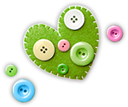
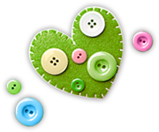

成立緣起
首頁 > 中心服務介紹 > 成立緣起
本市青少年福利服務中心在95年6月30日成立。我們的青少年朋友從參與中心LOGO的票選開始，就為本中心注入了青春活力，象徵這個中心是屬於青少年朋友的。
青少年是社會最珍貴的人力，為國家未來競爭力之所在，有健全的青少年才會有健全的明日社會。為促進青少年健全發展，提升青少年的素質與能力，使其成為二十一世紀國家發展所需之人才，乃政府與社會的義務與責任。
然而青少年的需求與所遭遇的問題，常隨社會脈動而改變，本市青少年福利服務中心除應做好各項福利協調聯繫與資源整合的工作，也應透過強化青少年適應能力等預防性措施，來滿足青少年朋友的需求。
青少年的角色與社會關係隨著年齡成長而變化，因此，如何以發展性及積極性的觀點，透過各項具體措施以滿足青少年不同年齡的需求，進而協助青少年朋友建立正確的價值觀，實屬當前在規劃青少年福利服務最優先而重要的工作。
青少年福利服務中心營造出一個對青少年友善的環境，尊重青少年自主權，協助青少年探索其需求，發展青少年成為國家最重要的人力資源。未來，希望中心能夠成為陪伴青少年成長的好伙伴，並且綜合教育、社會福利、休閒運動、文化生活、偏差行為之預防等項目，以多層、連貫、結合方式來推動青少年事務。
服務內容：
本中心95年3月成立，由台中市政府提供場地，群園社會福利基金會承辦，服務對象以12~18歲的少年及其家長為主，提供青少年健康休閒活動，並整合青少年活動相關訊息，提供青少年活動參與之機會，藉以促進青少年身心健康發展。辦理青少年親子諮詢專線與親職講座，提供本市青少年及其家長對於親子溝通或因應青少年問題諮詢的管道。
透過社會工作方法，連結相關資源，提供特殊青少年及其家庭獲致良好的社會適應，協助青少年因應生涯的轉折及所面臨的危機。建立台中市青少年服務資訊平台，將青少年相關服務（保護照顧、輔導、教養、健康醫療與法律、休閒育樂等）系統化的建立與資源連結，方便青少年及社會大眾的運用。
透過社會工作方法，連結相關資源，提供特殊青少年及其家庭獲致良好的社會適應，協助青少年因應生涯的轉折及所面臨的危機。建立台中市青少年服務資訊平台，將青少年相關服務（保護照顧、輔導、教養、健康醫療與法律、休閒育樂等）系統化的建立與資源連結，方便青少年及社會大眾的運用。
- 教育宣導活動
針對青少年發展階段中所面臨的問題，透過寓教於樂的宣導活動，建立青少年正確的價值與認知，提昇青少年生活適應能力。
- 多元性服務
定期舉辦社團活動、營隊、課後照顧，增強青少年自我肯定，提供青少年健康、正當的休閒。
- 親職教育活動
提供親職教育資訊或辦理親職講座，增進親子間良好互動關係，讓家長了解青少年的內心世界，也使青少年更能體會父母對子女的用心。
- 諮詢專線
提供各類青少年相關資源訊息與服務，協助解決青少年及其家長所遭遇到的問題。
- 志願服務
歡迎年滿18歲以上，對投入青少年服務有興趣之民眾，一起加入青少年服務的推展。
中心位置：
中心位置：
- 中心地址：
台中市南區合作街6號2樓
- 服務時間：
週二至週六早上9 : 00~12 : 00 下午13 : 30~17 : 30
- 服務電話：
04-2229-5685、04-2229-5685 傳真：04-2229-3702
- 中心網址：
www.tcjwc.org.tw
- 電子信箱：
tcjwc100@gmail.com
- 公車路線：
站名：文化創意園區站
台中客運：101．82．60．33
仁友客運：6210．89．105
服務設施使用原則：
手足球台使用原則：
- 以登記使用為原則。
- 使用以半小時為單位，輪流使用為原則，如登記使用時間已到，須重新登記方能繼續使用。
- 愛惜使用各項器材、設備。
圖書借閱使用原則：
- 本中心圖書全部開放，供民眾免費登記使用。
- 進入本中心圖書閱覽區請將背包、提袋、飲料食物等私人物品置於公共區。
- 食物、飲料、違禁品等嚴禁攜入本中心，一經發現，本中心將逕行處置，讀者不得有異議。
- 攜入本中心之所有物品應自行妥善保管，若有遺失，本中心不負賠償責任。
- 民眾欲借閱圖書，請先至書架上選取書籍，並向值班人員登記，每人每次借閱以圖書一本、漫畫兩本為限。
- 欲再次借閱書籍者，必須先向工作人員歸還上次借閱之書籍，方可再次借閱。
- 嚴禁於圖書上做任何記號，或毀損書籍；違者一律照價賠償。
- 未依規定完成歸還圖書程序者，視同借書未還，亦需照價賠償。
 
